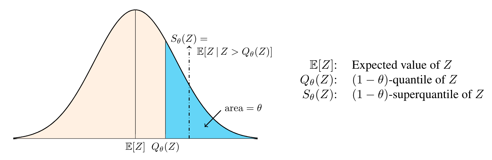

SQwash: Distributionally Robust Learning in PyTorch with 1 Additional Line of Code¶
This package implements reducers based on the superquantile a.k.a. Conditional Value at Risk (CVaR) for distributionally robust learning in PyTorch with GPU support. The package is licensed under the GPLv3 license.
The superquantile allows for distributional robustness by averaging over the worst \(\theta\) fraction of the losses in each minibatch, as illustrated in the following figure.
{kind=link}
Table of Contents¶
Installation¶
Once you have PyTorch >=1.7, you can grab SQwash from pip:
$ pip install sqwash
Alternatively, if you would like to edit the package, clone the repository, cd into the main directory of the repository and run
$ pip install -e .
The only dependency of SQwash is PyTorch, version 1.7 or higher. See the PyTorch webpage for install instructions.
Quick Start¶
As the name suggests, it requires only a one-line modification to the usual PyTorch training loops. See the notebooks folder for a full example on CIFAR-10.
1 2 3 4 5 6 7 8 9 10 11 | from sqwash import SuperquantileReducer
criterion = torch.nn.CrossEntropyLoss(reduction='none') # set `reduction='none'`
reducer = SuperquantileReducer(superquantile_tail_fraction=0.5) # define the reducer
# Training loop
for x, y in dataloader:
y_hat = model(x)
batch_losses = criterion(y_hat, y) # shape: (batch_size,)
loss = reducer(batch_losses) # Additional line to use the superquantile reducer
loss.backward() # Proceed as usual from here
...
|
The package also gives a functional version of the reducers, similar to torch.nn.functional:
1 2 3 4 5 6 7 8 9 | import torch.nn.functional as F
from sqwash import reduce_superquantile
for x, y in dataloader:
y_hat = model(x)
batch_losses = F.cross_entropy(y_hat, y, reduction='none') # must set `reduction='none'`
loss = reduce_superquantile(batch_losses, superquantile_tail_fraction=0.5) # Additional line
loss.backward() # Proceed as usual from here
...
|
The package can also be used for distributionally robust learning over pre-specified groups of data. Simply obtain a tensor of losses for each element of the batch and use the reducers in this pacakge as follows:
1 2 | loss_per_group = ... # shape: (num_groups,)
reducer = reduce_superquantile(loss_per_group, superquantile_tail_fraction=0.6)
|
Functionality¶
This package provides 3 reducers, which take a tensor of losses on a minibatch and reduce them to a single value.
MeanReducer: the usual reduction, which is equivalent to specifyingreduction='mean'in your criterion.Given a
torch.Tensordenoting a vector \(\ell = (\ell_1, \cdots, \ell_n)\), theMeanReducersimply returns the mean \(\sum_{i=1}^n \ell_i / n\). The functional equivalent of this isreduce_mean.
SuperquantileReducer: computes the superquantile/CVaR of the batch losses.Given a
torch.Tensordenoting a vector \(\ell = (\ell_1, \cdots, \ell_n)\), theSuperquantileReducerwith asuperquantile_tail_fractiondenoted by \(\theta\) returns the \((1-\theta)-\) superquantile \(\mathrm{SQ}_\theta\) of \(\ell\). See the Mathematical Definitions for its precise definition. Its functional counterpart isreduce_superquantile.
SuperquantileSmoothReducer: computes a smooth counterpart of the superquantile/CVaR of the batch losses.Given a
torch.Tensordenoting a vector \(\ell = (\ell_1, \cdots, \ell_n)\), theSuperquantileReducerwith asuperquantile_tail_fractiondenoted by \(\theta\) and a smoothing parameter denoted by \(\nu\) returns the \(\nu-\) smoothed \((1-\theta)-\) superquantile \(\mathrm{SQ}_\theta^\nu\) of \(\ell\). See the Mathematical Definitions for its precise definition. Its functional counterpart isreduce_superquantile_smooth.
See here for details of the API. Each of these reducers work just as well with cuda tensors for efficient distributionally robust learning on the GPU.
Mathematical Definitions¶
The \((1-\theta)-\) superquantile of \(\ell=(\ell_1, \cdots, \ell_n)\) to an average over the \(\theta\) fraction of the largest elements of \(\ell\), if \(n\theta\) is an integer. See the figure at the top of the page. Formally, it is given by the two equivalent expressions (which are also valid when \(n\theta\) is not an integer):
The \(\nu-\) smoothed \((1-\theta)-\) superquantile of \(\ell=(\ell_1, \cdots, \ell_n)\) is given by
where \(u = \mathbf{1}_n / n\) denotes the uniform distribution over \(n\) atoms.
Authors¶
For any questions or comments, please raise an issue on github, or contact Krishna Pillutla.
Cite¶
If you found this package useful, please cite the following work. If you use this code, please cite:
@inproceedings{DBLP:conf/ciss/LPMH21,
author = {Yassine Laguel and
Krishna Pillutla and
J{\'{e}}r{\^{o}}me Malick and
Zaid Harchaoui},
title = {{A Superquantile Approach to Federated Learning with Heterogeneous
Devices}},
booktitle = {55th Annual Conference on Information Sciences and Systems, {CISS}
2021, Baltimore, MD, USA, March 24-26, 2021},
pages = {1--6},
publisher = {{IEEE}},
year = {2021},
}
Acknowledgments¶
We acknowledge support from NSF DMS 2023166, DMS 1839371, CCF 2019844, the CIFAR program “Learning in Machines and Brains”, faculty research awards, and a JP Morgan PhD fellowship. This work has been partially supported by MIAI – Grenoble Alpes, (ANR-19-P3IA-0003).